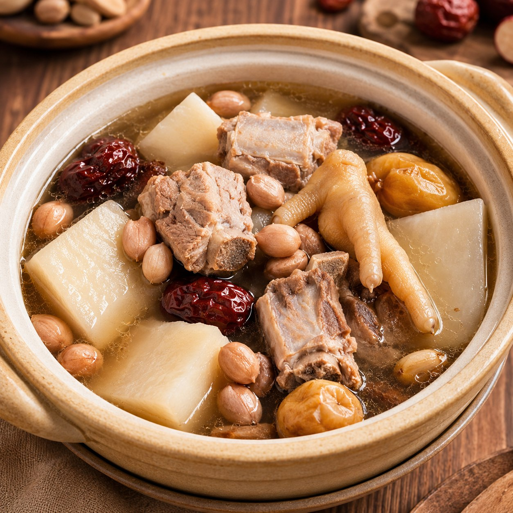
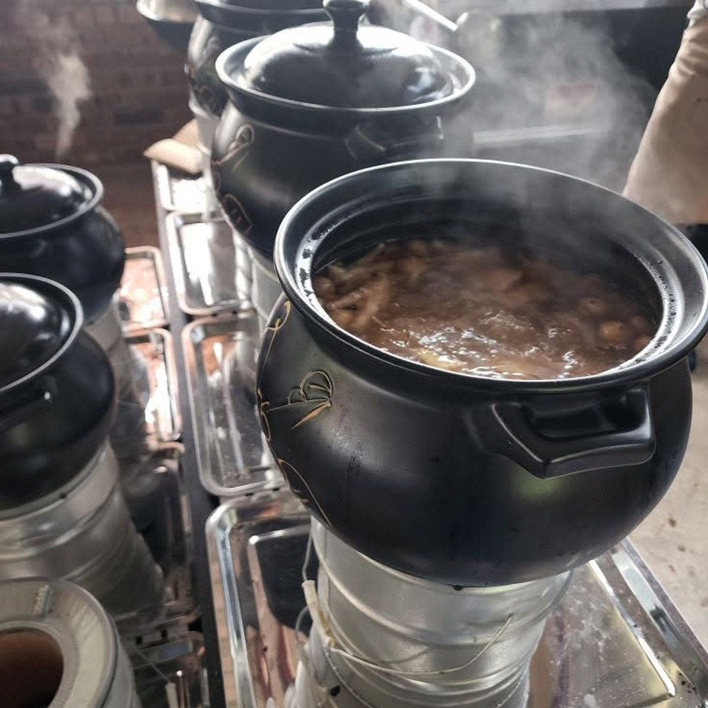
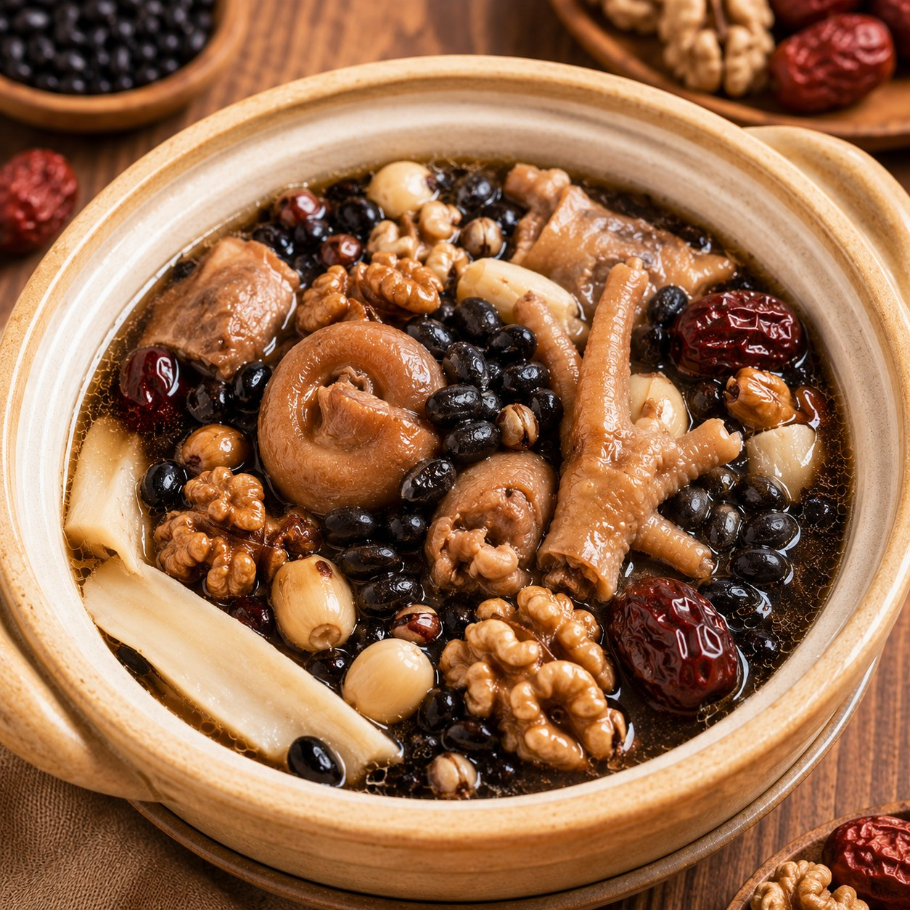
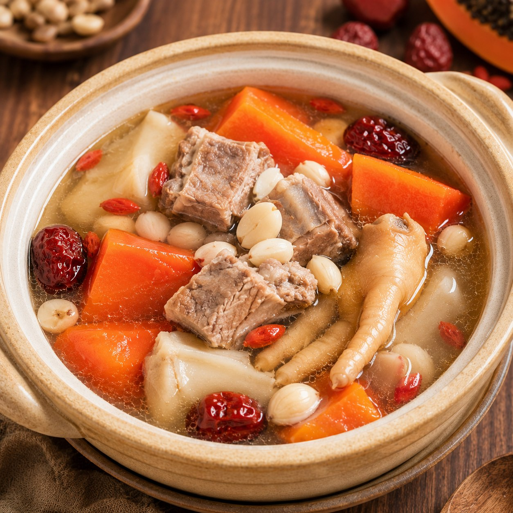
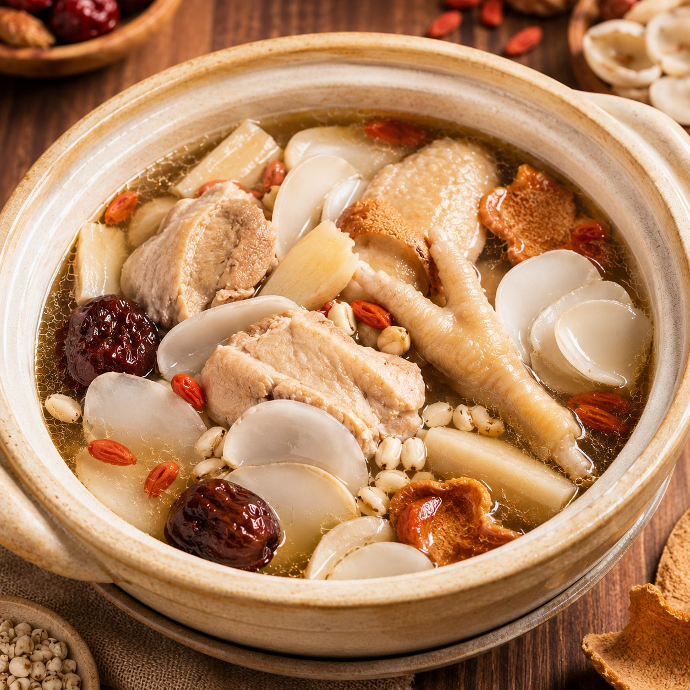
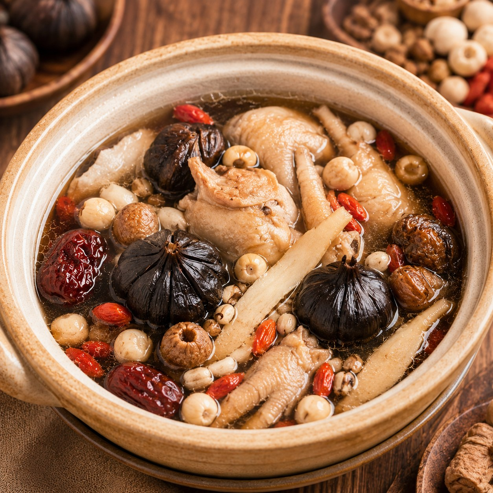
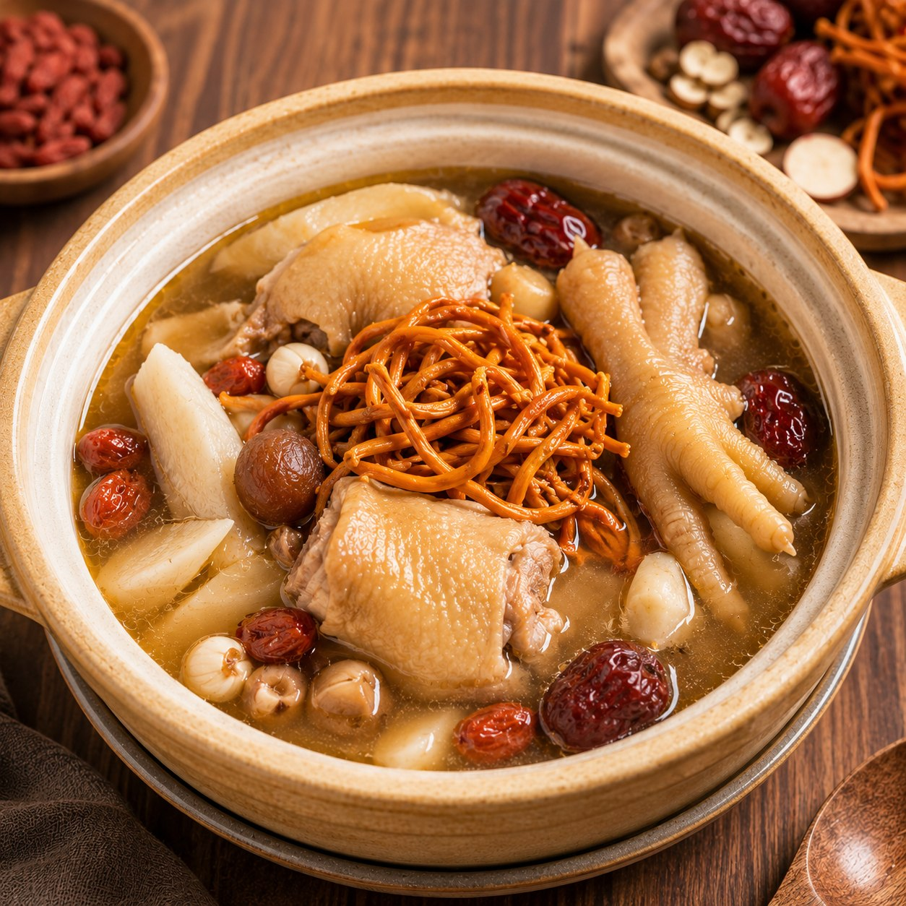

莲藕粉葛排骨汤
汤味清甜带粉葛香，莲藕口感温和，排骨慢炖后汤头更厚实。适合家庭聚餐、长辈、小孩，以及想喝一碗清润不油腻汤品的顾客。

炭火慢炖
以传统方式慢慢炖出温润顺口的好味道，适合家庭聚餐、日常滋补，以及喜欢养生汤品的顾客。汤品供应情况以门店当天为准。
汤品选择

汤味清甜带粉葛香，莲藕口感温和，排骨慢炖后汤头更厚实。适合家庭聚餐、长辈、小孩，以及想喝一碗清润不油腻汤品的顾客。

黑豆香气浓厚，核桃带自然坚果香，猪尾慢炖后汤感更醇。适合喜欢浓郁汤头、日常滋补、工作忙碌后想喝暖身汤品的顾客。

木瓜让汤头带自然清甜，南北杏香气温润，排骨增加鲜味。适合一家大小、喜欢顺口清甜汤品，或想在饭前饭后配一碗暖汤的顾客。

海底椰清香淡雅，老鸡慢炖后汤味鲜甜有层次。适合喜欢清润口感、长辈用餐、家庭聚会，以及不想喝太重口味汤品的顾客。

黑蒜味道甘香圆润，鸡汤慢炖后鲜味更明显，入口浓郁但不刺激。适合喜欢深层香气、想喝较厚实汤头，以及聚餐时搭配主菜享用。

虫草花香气柔和，鸡汤清甜温润，整体口味舒服耐喝。适合日常养生、家庭晚餐、长辈与喜欢清香汤品的顾客。
选用药材、肉类与清水慢火细炖，汤味自然甘甜。
每一盅炖汤都讲究火候与时间，慢慢炖出温润口感。
聚餐时加一盅汤，让整桌菜式更完整、更舒服。
汤品供应会根据门店与当天准备情况调整，请 WhatsApp 或到店确认。